Designing a shopping calculator to help newcomers in Canada acclimate to an unfamiliar pricing structure
Overview
The differences in currencies and tax systems make shopping slower and more inconvenient for newcomers. This project offers a more convenient shopping experience for visitors and new residents by converting prices from Canadian dollars to a currency familiar to the user, while calculating the total cost of their shopping trip and helping them keep track of their spending.
Role
UX/UI Designer, independent project
Tools
Pen and paper, Adobe XD, Figma, HTML, CSS, JavaScript
Timeline
Jan – Apr 2022 (original concept)
Dec 2024 & Mar 2025 (redesign)
Quick navigation
The challenge
Many new residents need to convert prices when shopping due to their unfamiliarity with the pricing structure, creating an additional cognitive load.
The concept
A shopping calculator that converts from Canadian dollars to the user's currency of choice and displays the conversion as they shop, designed for on-the-go and one-handed use.
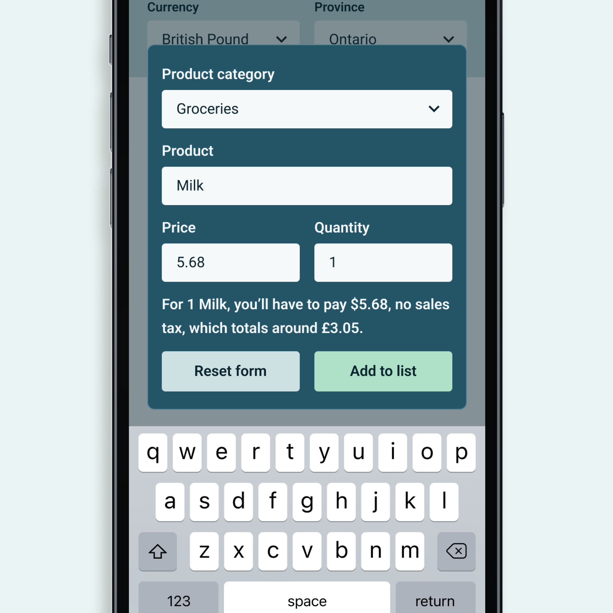
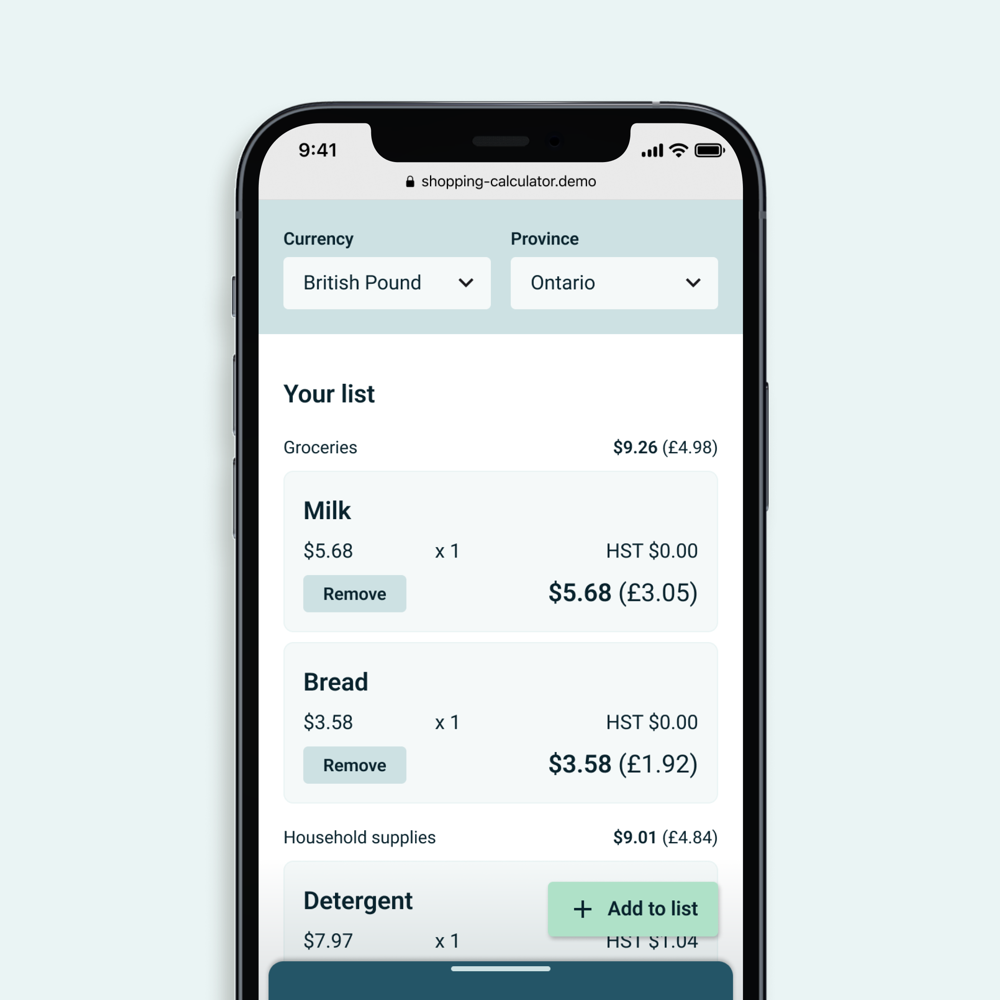
The challenge
There is an additional cognitive load for new residents when shopping due to their unfamiliarity with the pricing structure.
Shoppers tend to judge prices based on their experiences, but for many newcomers, switching between currencies is an added step to navigate unfamiliar pricing. Being able to mentally convert from one currency to another is one thing, keeping track of the numbers is another matter. Those who've been used to tax-inclusive pricing also have the additional task of figuring out how the sales tax applies.

What if there's something that combines existing tools to reduce that cognitive load and help newcomers adapt more easily?
The common advice is to "give it time, and you'll get used to it." People get used to the currency difference eventually as they shop more often, but that transition doesn't have to be difficult or time-consuming. Amidst other challenges that come with relocating, one less source of stress could be valuable.
The concept
A shopping calculator that converts from Canadian dollars to the user's currency of choice, showing them the conversion as they shop...
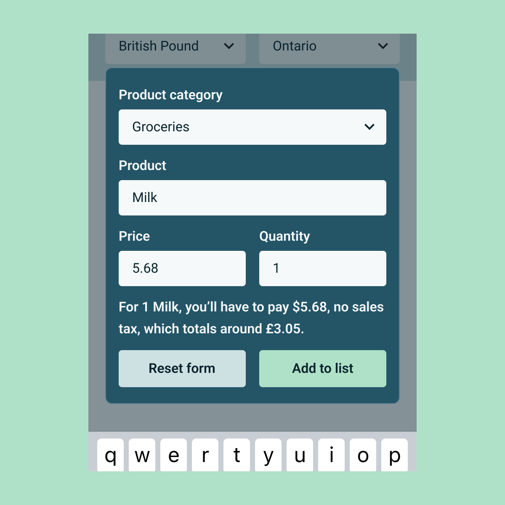
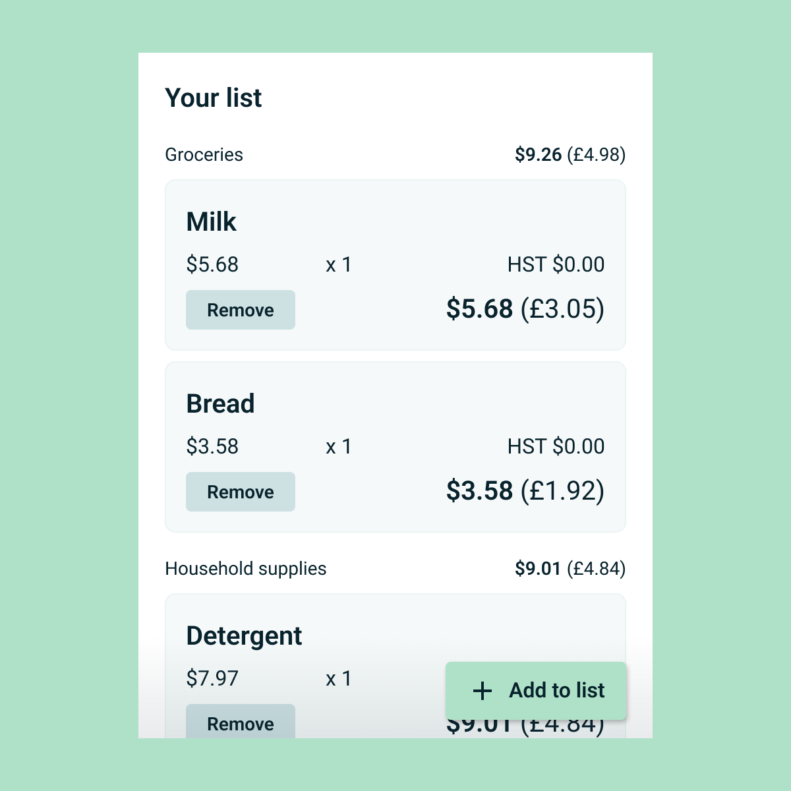
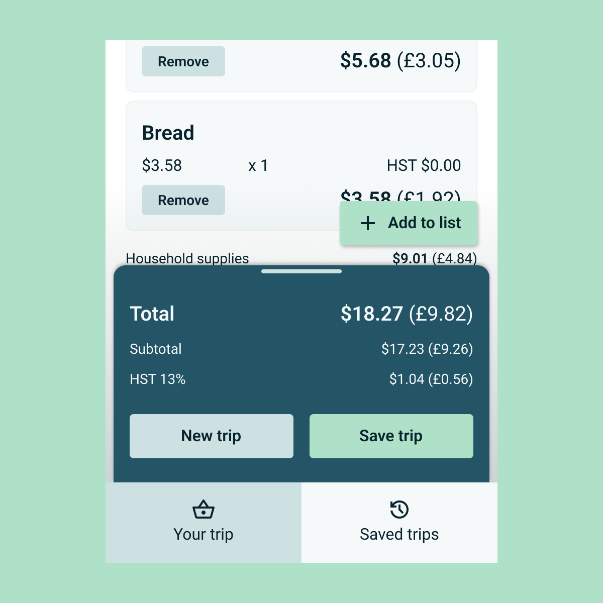
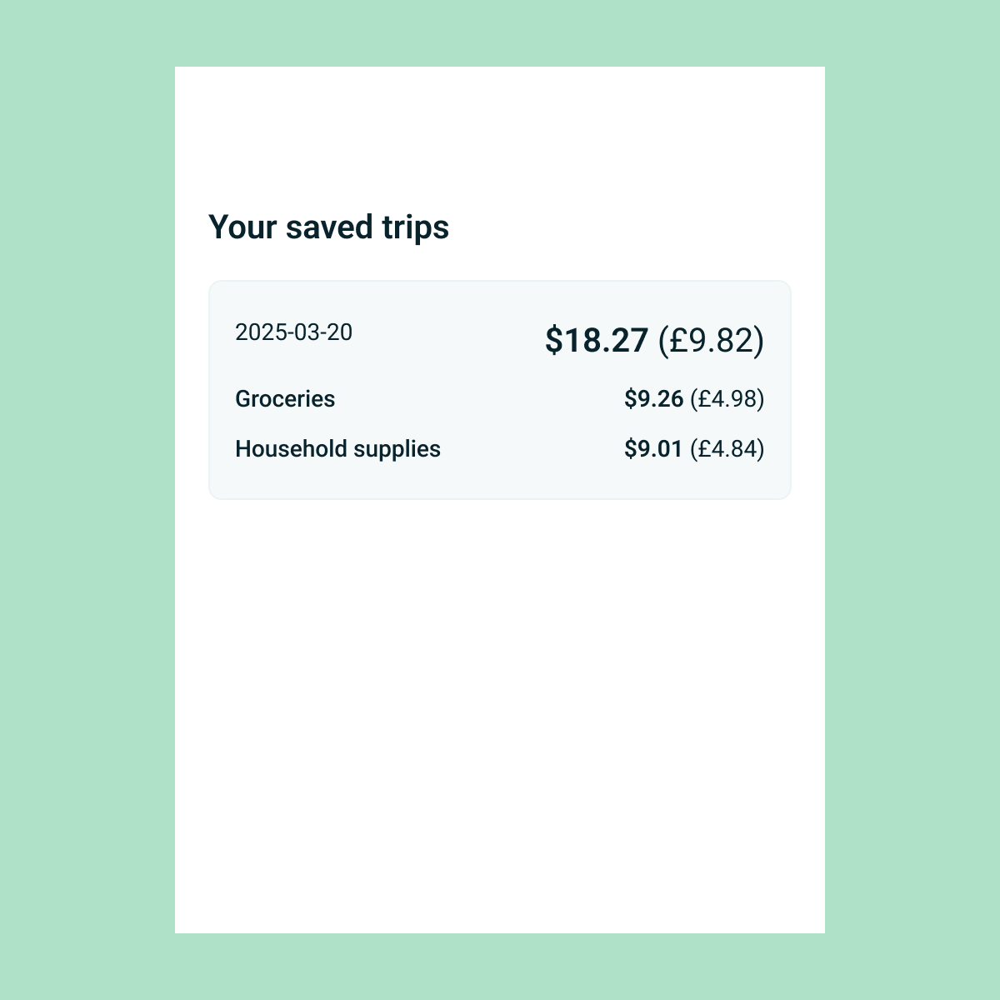
... and prioritizing on-the-go usage through real-time currency conversion and optimization for one-handed interactions.
Real-time conversion
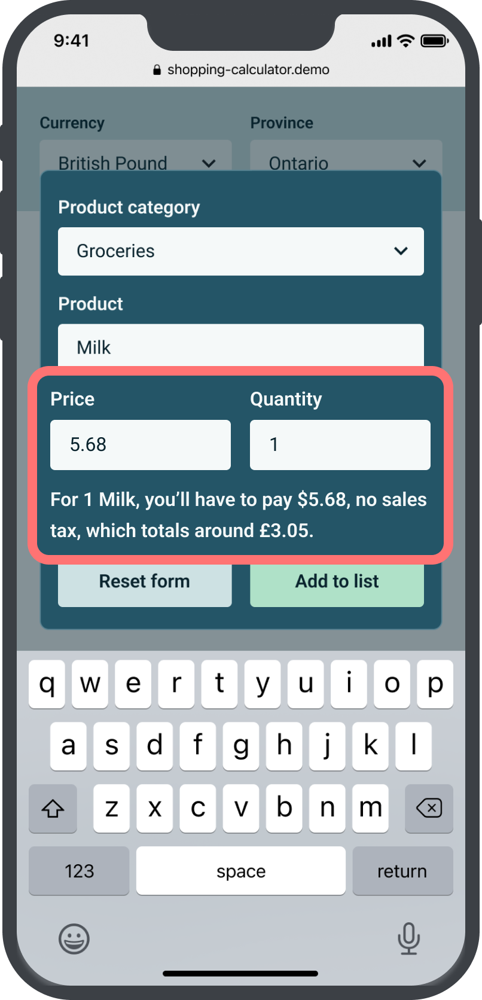
Shop in 2 currencies
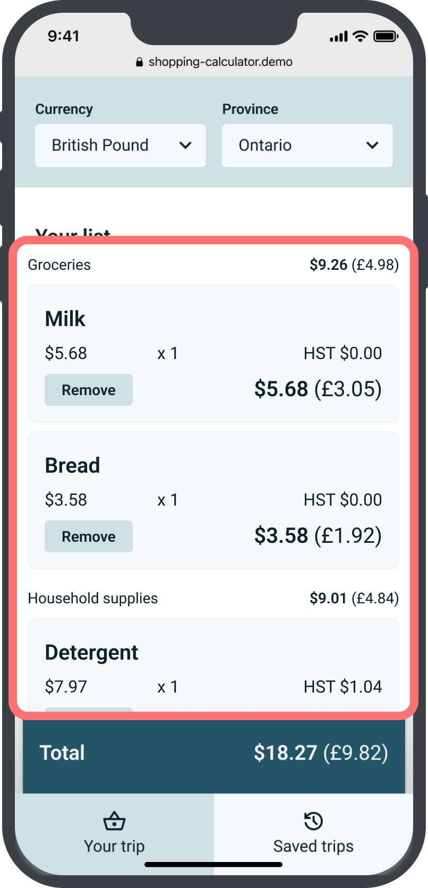
One-handed, on-the-go
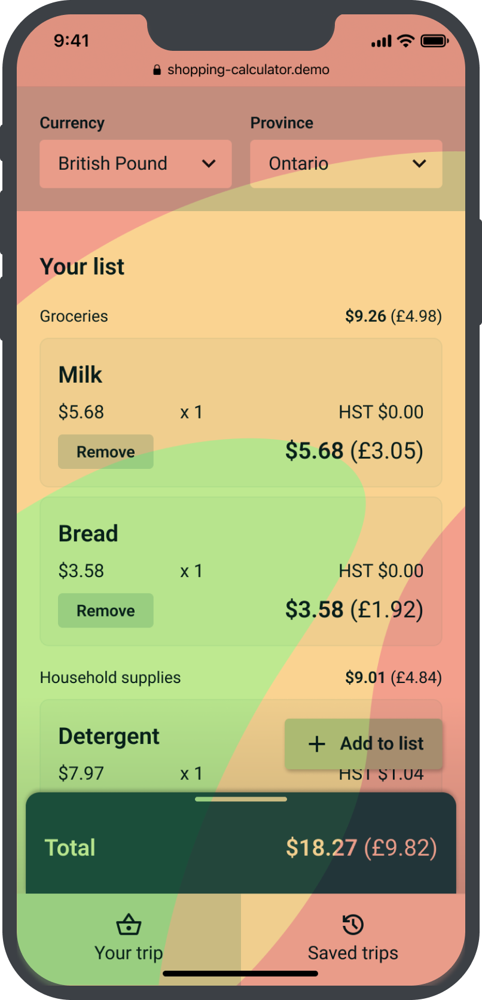
Design
I mapped out the user interactions (in blue) and machine activities (in green).
I ideated layouts and conducted quick user tests with paper prototypes.
My experience with front-end development was limited at this point, so I was advised to keep everything to one HTML document—thus, one screen. A challenge I encountered early on was fitting a lot of information into one phone screen. To address this constraint, most participants recommended displaying the information gradually.

The low-fidelity designs were transformed into digital wireframes on Adobe XD, then Figma.


For a mobile app, my designs need to ensure the reachability of components and better account for native UI elements.
Better onboarding
New users are presented with the modal to select currency and province, and don't have to reach the top of the screen.
Easy button access
The “Add to list” button floats near the bottom right corner and stays visible to users regardless of the length of the shopping list.
Reduce clutter
Simplified the layout of the summary area to reduce confusion, and removed clutter in the “Saved” screen.
Improve contrast
Adjusted the colour palette to increase colour contrast and cohesion.
Slide between the "before" and "after" wireframes.
Develop
With all that being said, let's make this a web application first.
Ideally, a mobile app would be more convenient and could leverage the device's hardware and operating system. However, native hardware isn't necessary for this proof of concept, and a web application could reach more potential users.
A web platform also increases the usability for one-handed use.
A short survey I conducted in 2022 saw 66.7% of respondents frequently use their phones with one hand, and 46.7% use them while shopping. The smaller space in a web browser pushes the UI elements into areas where the user's thumb can reach without shifting their grip as often.
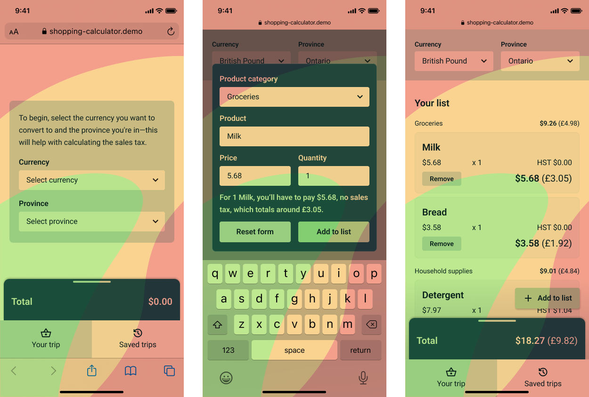
I coded a prototype with real-time conversion rates and simple saving capability.
I turned my wireframes into code using HTML, CSS, and JavaScript, and worked out the math for calculations when items are added and removed. I used the Frankfurter API to retrieve conversion rates. The selected currency and province are saved using local storage, allowing the user to skip this selection process when they use the app again.
Next steps
Envisioning a more scalable product
There are improvements I could make to the prototype, such as adding geolocation to automatically detect the province the user is in, a confirmation modal when the user removes an item, or the following changes:
Language selection
Since the target users are people who are living in Canada for the first time and may not be comfortable with English, they should be able to use this tool in a familiar language.
Scanning labels
Grocery items are often labelled with their names and prices. Using the phone's camera to scan the labels would speed up the information-inputting process.
Deselecting items
Shoppers are indecisive, so allowing them to deselect items, view how much their total would change, and add a previously unwanted item back would significantly improve the experience.
Implementing these additional features requires a more complex system that leverages a frontend framework, backend database, and device hardware. With these proposed features added, the user base can expand to shoppers looking for an intuitive shopping calculator. There's also potential to expand this app to other countries outside Canada.
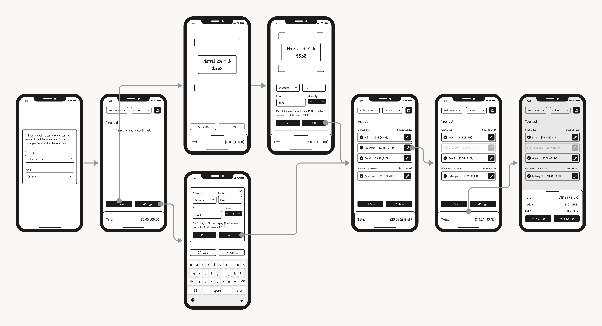
Reflection
Trying not to get caught up in technical constraints
I realized how often features that would improve the user experience weren't considered simply because I couldn't figure out the technicality. Having a good grasp of the technology and development process is valuable when considering product feasibility; however, moving forward, I can't just discard an idea because I personally can't code it. As long as I have completed comprehensive research and design—including research into the technology requirements—I can make a blueprint for a development team to pick up from there.